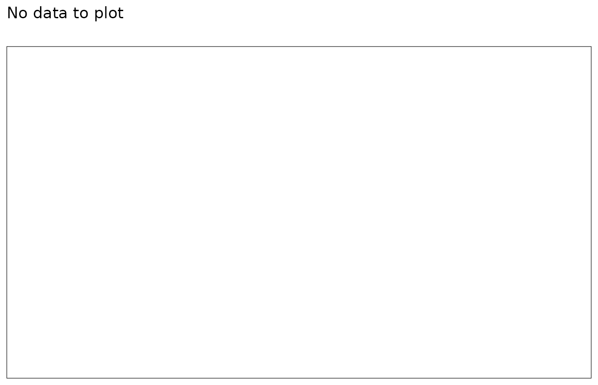

Codelist diagnostics
CodelistDiagnostics.RmdIntroduction
In this example we’re going to summarise the characteristics of individuals with an ankle sprain, ankle fracture, forearm fracture, a hip fracture and different measurements using the Eunomia synthetic data.
We’ll begin by creating our study cohorts.
library(CDMConnector)
library(CohortConstructor)
library(CodelistGenerator)
library(PhenotypeR)
library(MeasurementDiagnostics)
library(dplyr)
library(ggplot2)
con <- DBI::dbConnect(duckdb::duckdb(),
CDMConnector::eunomiaDir("synpuf-1k", "5.3"))
cdm <- CDMConnector::cdmFromCon(con = con,
cdmName = "Eunomia Synpuf",
cdmSchema = "main",
writeSchema = "main",
achillesSchema = "main")
cdm$injuries <- conceptCohort(cdm = cdm,
conceptSet = list(
"ankle_sprain" = 81151,
"ankle_fracture" = 4059173,
"forearm_fracture" = 4278672,
"hip_fracture" = 4230399,
"measurements_cohort" = c(40660437L, 2617206L, 4034850L, 2617239L, 4098179L)
),
name = "injuries")
cdm$injuries |>
glimpse()
#> Rows: ??
#> Columns: 4
#> Database: DuckDB 1.4.4 [unknown@Linux 6.11.0-1018-azure:R 4.5.2//tmp/RtmpCZLHXy/file21c12a54ea2b.duckdb]
#> $ cohort_definition_id <int> 5, 5, 5, 2, 5, 5, 5, 5, 5, 2, 5, 2, 5, 5, 5, 5, 5…
#> $ subject_id <int> 147, 362, 148, 347, 28, 454, 454, 684, 1097, 519,…
#> $ cohort_start_date <date> 2009-04-17, 2008-04-18, 2009-07-15, 2009-01-03, …
#> $ cohort_end_date <date> 2009-04-17, 2008-04-18, 2009-07-15, 2009-01-03, …Summarising code use
To get a good understanding of the codes we’ve used to define our
cohorts we can use the codelistDiagnostics() function.
code_diag <- codelistDiagnostics(cdm$injuries)Codelist diagnostics builds on CodelistGenerator and MeasurementDiagnostics R packages to perform the following analyses:
- Achilles code use: Which summarises the counts of our codes in our database based on achilles results using summariseAchillesCodeUse().
- Orphan code use: Orphan codes refer to codes that we did not include in our cohort definition, but that have any relationship with the codes in our codelist. So, although many can be false positives, we may identify some codes that we may want to use in our cohort definitions. This analysis uses summariseOrphanCodes().
- Cohort code use: Summarises the cohort code use in our cohort using summariseCohortCodeUse().
- Measurement diagnostics: If any of the concepts used in our codelist is a measurement, it summarises its code use using summariseCohortMeasurementUse().
The output of a function is a summarised result table.
Add codelist attribute
Some cohorts that may be created manually may not have the codelists
recorded in the cohort_codelist attribute. The package has
a utility function to record a codelist in a cohort_table
object:
cohortCodelist(cdm$injuries, cohortId = 1)
#>
#> - ankle_fracture (1 codes)
cdm$injuries <- cdm$injuries |>
addCodelistAttribute(codelist = list(new_codelist = c(1L, 2L)), cohortName = "ankle_fracture")
cohortCodelist(cdm$injuries, cohortId = 1)
#>
#> - new_codelist (2 codes)Visualise the results
We will now use different functions to visualise the results generated by CohortDiagnostics. Notice that these functions are from CodelistGenerator and MeasurementDiagnostics R packages packages.
Achilles code use
tableAchillesCodeUse(code_diag)|
Database name
|
|||||||||
|---|---|---|---|---|---|---|---|---|---|
|
Eunomia Synpuf
|
|||||||||
| Codelist name | Domain ID | Standard concept name | Standard concept ID | Vocabulary ID | Source concept name | Source concept ID | Source concept value |
Estimate name
|
|
| Record count | Person count | ||||||||
| ankle_sprain | condition | Sprain of ankle | 81151 | SNOMED | Other sprains and strains of ankle | 44829371 | 84509 | 31 | 27 |
| Sprain of ankle, unspecified site | 44820150 | 84500 | 31 | 27 | |||||
| measurements_cohort | measurement | Prostate cancer screening; prostate specific antigen test (psa) | 2617206 | HCPCS | Prostate cancer screening; prostate specific antigen test (psa) | 2617206 | G0103 | 146 | 124 |
| Screening cytopathology, cervical or vaginal (any reporting system), collected in preservative fluid, automated thin layer preparation, with screening by automated system and manual rescreening under physician supervision | 2617239 | HCPCS | Screening cytopathology, cervical or vaginal (any reporting system), collected in preservative fluid, automated thin layer preparation, with screening by automated system and manual rescreening under physician supervision | 2617239 | G0145 | 52 | 47 | ||
| Laboratory test | 4034850 | SNOMED | Other laboratory examination | 44835528 | V7269 | 101 | 95 | ||
| Laboratory examination, unspecified | 44835527 | V7260 | 101 | 95 | |||||
| Laboratory examination | 44836706 | V726 | 101 | 95 | |||||
| Laboratory examination ordered as part of a routine general medical examination | 44823881 | V7262 | 101 | 95 | |||||
| Pre-procedural laboratory examination | 44827407 | V7263 | 101 | 95 | |||||
| Drug screen, qualitative; multiple drug classes by high complexity test method (e.g., immunoassay, enzyme assay), per patient encounter | 40660437 | HCPCS | Drug screen, qualitative; multiple drug classes by high complexity test method (e.g., immunoassay, enzyme assay), per patient encounter | 40660437 | G0431 | 45 | 26 | ||
| Immunology laboratory test | 4098179 | SNOMED | Antibody response examination | 44830850 | V7261 | 20 | 20 | ||
| Other and unspecified nonspecific immunological findings | 44830461 | 79579 | 20 | 20 | |||||
Orphan code use
tableOrphanCodes(code_diag)|
Database name
|
||||||||||
|---|---|---|---|---|---|---|---|---|---|---|
|
Eunomia Synpuf
|
||||||||||
| Codelist name | Domain ID | Standard concept name | Standard concept ID | Vocabulary ID | Source concept name | Source concept ID | Source concept value | Relationship |
Estimate name
|
|
| Record count | Person count | |||||||||
| ankle_fracture | condition | Open fracture of medial malleolus | 432749 | SNOMED | Fracture of medial malleolus, open | 44835160 | 8241 | Descendant | 3 | 3 |
| Open fracture of lateral malleolus | 437998 | SNOMED | Fracture of lateral malleolus, open | 44823518 | 8243 | Descendant | 3 | 3 | ||
| Closed bimalleolar fracture | 438879 | SNOMED | Bimalleolar fracture, closed | 44823519 | 8244 | Descendant | 9 | 7 | ||
| Closed fracture of medial malleolus | 439162 | SNOMED | Fracture of medial malleolus, closed | 44833988 | 8240 | Descendant | 4 | 3 | ||
| Open bimalleolar fracture | 441154 | SNOMED | Bimalleolar fracture, open | 44827037 | 8245 | Descendant | 1 | 1 | ||
| Closed trimalleolar fracture | 441155 | SNOMED | Trimalleolar fracture, closed | 44833989 | 8246 | Descendant | 5 | 4 | ||
| Closed fracture of lateral malleolus | 441428 | SNOMED | Fracture of lateral malleolus, closed | 44831664 | 8242 | Descendant | 21 | 12 | ||
| Closed fracture of talus | 74777 | SNOMED | Closed fracture of astragalus | 44833991 | 82521 | Descendant | 2 | 2 | ||
| Closed fracture of ankle | 75095 | SNOMED | Unspecified fracture of ankle, closed | 44825882 | 8248 | Descendant, Is a | 19 | 16 | ||
| Open fracture of talus | 77131 | SNOMED | Open fracture of astragalus | 44825885 | 82531 | Descendant | 2 | 2 | ||
| Open fracture of ankle | 78888 | SNOMED | Unspecified fracture of ankle, open | 44833990 | 8249 | Descendant, Is a | 5 | 4 | ||
| ankle_sprain | condition | Sprain of distal tibiofibular ligament | 73889 | SNOMED | Sprain of tibiofibular (ligament), distal of ankle | 44827053 | 84503 | Descendant, Is a, Subsumes | 4 | 4 |
| Sprain of calcaneofibular ligament | 75667 | SNOMED | Sprain of calcaneofibular (ligament) of ankle | 44828237 | 84502 | Descendant | 1 | 1 | ||
| Sprain of deltoid ligament of ankle | 77707 | SNOMED | Sprain of deltoid (ligament), ankle | 44837509 | 84501 | Descendant, Is a, Subsumes | 4 | 4 | ||
| forearm_fracture | condition | Closed fracture of shaft of bone of forearm | 4101989 | SNOMED | Closed fracture of shaft of radius or ulna, unspecified | 44824680 | 81320 | Descendant | 1 | 1 |
| Open fracture of shaft of bone of forearm | 4195752 | SNOMED | Open fracture of shaft of radius or ulna, unspecified | 44827030 | 81330 | Descendant | 2 | 2 | ||
| Open fracture of neck of radius | 432744 | SNOMED | Open fracture of neck of radius | 44836343 | 81316 | Descendant | 1 | 1 | ||
| Open fracture of lower end of radius AND ulna | 432747 | SNOMED | Open fracture of lower end of radius with ulna | 44832765 | 81354 | Descendant | 1 | 1 | ||
| Open fracture of proximal end of ulna | 433047 | SNOMED | Other and unspecified open fractures of proximal end of ulna (alone) | 44824679 | 81314 | Descendant | 2 | 2 | ||
| Open fracture of shaft of ulna | 433333 | SNOMED | Open fracture of shaft of ulna (alone) | 44837492 | 81332 | Descendant | 1 | 1 | ||
| Open Colles' fracture | 434767 | SNOMED | Open Colles' fracture | 44837493 | 81351 | Descendant | 2 | 2 | ||
| Open fracture of upper end of forearm | 434771 | SNOMED | Open fracture of upper end of forearm, unspecified | 44833976 | 81310 | Descendant | 1 | 1 | ||
| Closed fracture of distal end of ulna | 435374 | SNOMED | Closed fracture of distal end of ulna (alone) | 44829345 | 81343 | Descendant | 4 | 3 | ||
| Closed fracture of radius AND ulna | 435380 | SNOMED | Closed fracture of unspecified part of radius with ulna | 44832766 | 81383 | Descendant | 6 | 6 | ||
| Closed fracture of shaft of radius with ulna | 44828215 | 81323 | Descendant | 6 | 6 | |||||
| Closed Colles' fracture | 435950 | SNOMED | Closed Colles' fracture | 44824682 | 81341 | Descendant | 20 | 13 | ||
| Closed fracture of proximal end of ulna | 436251 | SNOMED | Other and unspecified closed fractures of proximal end of ulna (alone) | 44821290 | 81304 | Descendant | 1 | 1 | ||
| Closed fracture of ulna | 436541 | SNOMED | Closed fracture of unspecified part of ulna (alone) | 44837494 | 81382 | Descendant | 1 | 1 | ||
| Closed fracture of shaft of radius | 436826 | SNOMED | Closed fracture of shaft of radius (alone) | 44831655 | 81321 | Descendant | 2 | 2 | ||
| Closed fracture of neck of radius | 436837 | SNOMED | Closed fracture of neck of radius | 44825869 | 81306 | Descendant | 3 | 2 | ||
| Closed fracture of distal end of radius | 437116 | SNOMED | Other closed fractures of distal end of radius (alone) | 44829344 | 81342 | Descendant | 48 | 33 | ||
| Open fracture of lower end of forearm | 437122 | SNOMED | Open fracture of lower end of forearm, unspecified | 44832764 | 81350 | Descendant | 1 | 1 | ||
| Open fracture of upper end of radius AND ulna | 437393 | SNOMED | Open fracture of radius with ulna, upper end (any part) | 44822369 | 81318 | Descendant | 1 | 1 | ||
| Closed fracture of lower end of forearm | 437394 | SNOMED | Closed fracture of lower end of forearm, unspecified | 44824681 | 81340 | Descendant | 4 | 3 | ||
| Closed fracture of shaft of ulna | 437400 | SNOMED | Closed fracture of shaft of ulna (alone) | 44833977 | 81322 | Descendant | 1 | 1 | ||
| Open fracture of ulna | 438576 | SNOMED | Open fracture of unspecified part of ulna (alone) | 44831658 | 81392 | Descendant | 1 | 1 | ||
| Closed fracture of radius | 439166 | SNOMED | Closed fracture of unspecified part of radius (alone) | 44820129 | 81381 | Descendant | 11 | 7 | ||
| Closed fracture of upper end of forearm | 439940 | SNOMED | Closed fracture of upper end of forearm, unspecified | 44824678 | 81300 | Descendant | 4 | 3 | ||
| Pathological fracture - forearm | 440511 | SNOMED | Pathologic fracture of distal radius and ulna | 44824538 | 73312 | Descendant, Is a | 1 | 1 | ||
| Closed fracture of lower end of radius AND ulna | 440538 | SNOMED | Closed fracture of lower end of radius with ulna | 44832763 | 81344 | Descendant | 6 | 5 | ||
| Closed fracture of upper end of radius AND ulna | 440544 | SNOMED | Closed fracture of radius with ulna, upper end [any part] | 44825870 | 81308 | Descendant | 6 | 2 | ||
| Open fracture of distal end of radius | 440546 | SNOMED | Other open fractures of distal end of radius (alone) | 44831657 | 81352 | Descendant | 3 | 3 | ||
| Open fracture of forearm | 440851 | SNOMED | Open fracture of unspecified part of forearm | 44824683 | 81390 | Descendant, Is a | 1 | 1 | ||
| Closed fracture of proximal end of radius | 441973 | SNOMED | Other and unspecified closed fractures of proximal end of radius (alone) | 44827028 | 81307 | Descendant | 3 | 3 | ||
| Closed fracture of forearm | 441974 | SNOMED | Closed fracture of unspecified part of forearm | 44833978 | 81380 | Descendant, Is a | 1 | 1 | ||
| Fracture of radius AND ulna | 442598 | SNOMED | Torus fracture of radius and ulna | 44836347 | 81347 | Descendant | 1 | 1 | ||
| Torus fracture of radius | 443428 | SNOMED | Torus fracture of radius (alone) | 44836346 | 81345 | Descendant | 1 | 1 | ||
| Closed fracture of olecranon process of ulna | 73036 | SNOMED | Closed fracture of olecranon process of ulna | 44832761 | 81301 | Descendant | 7 | 5 | ||
| Closed fracture of head of radius | 73341 | SNOMED | Closed fracture of head of radius | 44831653 | 81305 | Descendant | 6 | 4 | ||
| Open fracture of coronoid process of ulna | 74192 | SNOMED | Open fracture of coronoid process of ulna | 44823507 | 81312 | Descendant | 1 | 1 | ||
| Open fracture of olecranon process of ulna | 74763 | SNOMED | Open fracture of olecranon process of ulna | 44832762 | 81311 | Descendant | 4 | 4 | ||
| Closed Monteggia's fracture | 79165 | SNOMED | Closed Monteggia's fracture | 44831652 | 81303 | Descendant | 1 | 1 | ||
| Closed fracture of coronoid process of ulna | 79172 | SNOMED | Closed fracture of coronoid process of ulna | 44835149 | 81302 | Descendant | 2 | 2 | ||
| Open Monteggia's fracture | 81148 | SNOMED | Open Monteggia's fracture | 44831654 | 81313 | Descendant | 1 | 1 | ||
| hip_fracture | condition | Closed intertrochanteric fracture | 136834 | SNOMED | Closed fracture of intertrochanteric section of neck of femur | 44823516 | 82021 | Descendant, Is a | 56 | 38 |
| Closed fracture of trochanteric section of neck of femur | 44820133 | 82020 | Descendant, Is a | 56 | 38 | |||||
| Closed fracture proximal femur, subtrochanteric | 4009610 | SNOMED | Closed fracture of subtrochanteric section of neck of femur | 44824689 | 82022 | Descendant, Is a | 12 | 9 | ||
| Closed fracture of neck of femur | 434500 | SNOMED | Closed fracture of unspecified part of neck of femur | 44825877 | 8208 | Descendant, Is a | 144 | 77 | ||
| Closed fracture of base of neck of femur | 435956 | SNOMED | Closed fracture of base of neck of femur | 44836352 | 82003 | Descendant | 15 | 10 | ||
| Closed fracture of midcervical section of femur | 436247 | SNOMED | Closed fracture of midcervical section of neck of femur | 44827033 | 82002 | Descendant | 16 | 14 | ||
| Closed fracture of intracapsular section of femur | 437703 | SNOMED | Closed fracture of intracapsular section of neck of femur, unspecified | 44832772 | 82000 | Descendant | 8 | 7 | ||
| Closed transcervical fracture of femur | 440556 | SNOMED | Other closed transcervical fracture of neck of femur | 44829353 | 82009 | Descendant | 20 | 17 | ||
| Closed fracture of acetabulum | 81696 | SNOMED | Closed fracture of acetabulum | 44837487 | 8080 | Descendant, Is a | 10 | 6 | ||
| measurements_cohort | procedure | Antibody screen, RBC, each serum technique | 2212937 | CPT4 | Antibody screen, RBC, each serum technique | 2212937 | 86850 | Descendant | 55 | 53 |
| Antibody identification, RBC antibodies, each panel for each serum technique | 2212939 | CPT4 | Antibody identification, RBC antibodies, each panel for each serum technique | 2212939 | 86870 | Descendant | 1 | 1 | ||
| Pathology consultation during surgery; cytologic examination (eg, touch prep, squash prep), initial site | 2213298 | CPT4 | Pathology consultation during surgery; cytologic examination (eg, touch prep, squash prep), initial site | 2213298 | 88333 | Descendant | 3 | 3 | ||
| measurement | Screening cytopathology, cervical or vaginal (any reporting system), collected in preservative fluid, automated thin layer preparation, requiring interpretation by physician | 2617226 | HCPCS | Screening cytopathology, cervical or vaginal (any reporting system), collected in preservative fluid, automated thin layer preparation, requiring interpretation by physician | 2617226 | G0124 | Descendant | 1 | 1 | |
| Screening cytopathology smears, cervical or vaginal, performed by automated system with manual rescreening | 2617241 | HCPCS | Screening cytopathology smears, cervical or vaginal, performed by automated system with manual rescreening | 2617241 | G0148 | Descendant | 1 | 1 | ||
| Wet mounts, including preparations of vaginal, cervical or skin specimens | 2720582 | HCPCS | Wet mounts, including preparations of vaginal, cervical or skin specimens | 2720582 | Q0111 | Descendant | 1 | 1 | ||
| Detection of parasite | 4047338 | SNOMED | Screening examination for other specified parasitic infections | 44828606 | V758 | Descendant | 3 | 3 | ||
| Antenatal RhD antibody screening | 4060266 | SNOMED | Antenatal screening for isoimmunization | 44831933 | V285 | Descendant | 8 | 8 | ||
| Type 1 hypersensitivity skin test | 4091110 | SNOMED | Diagnostic skin and sensitization tests | 44823882 | V727 | Descendant | 3 | 3 | ||
| Hematology screening test | 4198132 | SNOMED | Screening for unspecified disorder of blood and blood-forming organs | 44834355 | V789 | Descendant | 20 | 20 | ||
| Screening for other disorders of blood and blood-forming organs | 44830861 | V788 | Descendant | 20 | 20 | |||||
| Sickle cell disease screening test | 4199173 | SNOMED | Screening for sickle-cell disease or trait | 44820499 | V782 | Descendant | 9 | 9 | ||
| Microscopic examination of cervical Papanicolaou smear | 4208622 | SNOMED | Encounter for Papanicolaou cervical smear to confirm findings of recent normal smear following initial abnormal smear | 44833154 | V7232 | Descendant | 10 | 10 | ||
| Genetic test | 4237017 | SNOMED | Screening for genetic disease carrier status | 44834359 | V8271 | Descendant, Is a, Subsumes | 23 | 23 | ||
| Other genetic screening | 44835547 | V8279 | Descendant, Is a, Subsumes | 23 | 23 | |||||
| Blood group typing | 4258677 | SNOMED | Encounter for blood typing | 44834343 | V7286 | Descendant | 14 | 14 | ||
| Microscopic examination of vaginal Papanicolaou smear | 4258831 | SNOMED | Following surgery, follow-up vaginal pap smear | 44821597 | V6701 | Descendant | 22 | 22 | ||
Cohort code use
tableCohortCodeUse(code_diag)|
Database name
|
||||||||||||||
|---|---|---|---|---|---|---|---|---|---|---|---|---|---|---|
|
Eunomia Synpuf
|
||||||||||||||
| Cohort name | Codelist name | Standard concept name | Standard concept ID | Source concept name | Source concept ID | Source concept value | Type concept id | Type concept name | Domain ID | Table | Diagnostic | Phenotyper version |
Estimate name
|
|
| Person count | Record count | |||||||||||||
| ankle_sprain | ankle_sprain | Sprain of ankle | 81151 | Other sprains and strains of ankle | 44829371 | 84509 | 38000230 | Outpatient header - 1st position | condition | condition_occurrence | codelistDiagnostics | 0.3.1 | 1 | 1 |
| 45756835 | Carrier claim header - 1st position | condition | condition_occurrence | codelistDiagnostics | 0.3.1 | 5 | 5 | |||||||
| Sprain of ankle, unspecified site | 44820150 | 84500 | 38000232 | Outpatient header - 3rd position | condition | condition_occurrence | codelistDiagnostics | 0.3.1 | 1 | 1 | ||||
| 38000235 | Outpatient header - 6th position | condition | condition_occurrence | codelistDiagnostics | 0.3.1 | 1 | 1 | |||||||
| 45756835 | Carrier claim header - 1st position | condition | condition_occurrence | codelistDiagnostics | 0.3.1 | 2 | 2 | |||||||
| 45756836 | Carrier claim header - 2nd position | condition | condition_occurrence | codelistDiagnostics | 0.3.1 | 4 | 4 | |||||||
| 45756837 | Carrier claim header - 3rd position | condition | condition_occurrence | codelistDiagnostics | 0.3.1 | 4 | 4 | |||||||
| 45756838 | Carrier claim header - 4th position | condition | condition_occurrence | codelistDiagnostics | 0.3.1 | 1 | 1 | |||||||
| 45756843 | Carrier claim detail - 1st position | condition | condition_occurrence | codelistDiagnostics | 0.3.1 | 10 | 10 | |||||||
| 45756844 | Carrier claim detail - 2nd position | condition | condition_occurrence | codelistDiagnostics | 0.3.1 | 2 | 2 | |||||||
| overall | – | NA | NA | NA | NA | NA | NA | NA | codelistDiagnostics | 0.3.1 | 27 | 31 | ||
| measurements_cohort | measurements_cohort | Drug screen, qualitative; multiple drug classes by high complexity test method (e.g., immunoassay, enzyme assay), per patient encounter | 40660437 | Drug screen, qualitative; multiple drug classes by high complexity test method (e.g., immunoassay, enzyme assay), per patient encounter | 40660437 | G0431 | 45754907 | Derived value | measurement | measurement | codelistDiagnostics | 0.3.1 | 26 | 45 |
| Immunology laboratory test | 4098179 | Antibody response examination | 44830850 | V7261 | 45754907 | Derived value | measurement | measurement | codelistDiagnostics | 0.3.1 | 11 | 11 | ||
| Other and unspecified nonspecific immunological findings | 44830461 | 79579 | 45754907 | Derived value | measurement | measurement | codelistDiagnostics | 0.3.1 | 9 | 9 | ||||
| Laboratory test | 4034850 | Laboratory examination | 44836706 | V726 | 45754907 | Derived value | measurement | measurement | codelistDiagnostics | 0.3.1 | 45 | 48 | ||
| Laboratory examination ordered as part of a routine general medical examination | 44823881 | V7262 | 45754907 | Derived value | measurement | measurement | codelistDiagnostics | 0.3.1 | 14 | 14 | ||||
| Laboratory examination, unspecified | 44835527 | V7260 | 45754907 | Derived value | measurement | measurement | codelistDiagnostics | 0.3.1 | 16 | 16 | ||||
| Other laboratory examination | 44835528 | V7269 | 45754907 | Derived value | measurement | measurement | codelistDiagnostics | 0.3.1 | 13 | 13 | ||||
| Pre-procedural laboratory examination | 44827407 | V7263 | 45754907 | Derived value | measurement | measurement | codelistDiagnostics | 0.3.1 | 10 | 10 | ||||
| Prostate cancer screening; prostate specific antigen test (psa) | 2617206 | Prostate cancer screening; prostate specific antigen test (psa) | 2617206 | G0103 | 45754907 | Derived value | measurement | measurement | codelistDiagnostics | 0.3.1 | 124 | 146 | ||
| Screening cytopathology, cervical or vaginal (any reporting system), collected in preservative fluid, automated thin layer preparation, with screening by automated system and manual rescreening under physician supervision | 2617239 | Screening cytopathology, cervical or vaginal (any reporting system), collected in preservative fluid, automated thin layer preparation, with screening by automated system and manual rescreening under physician supervision | 2617239 | G0145 | 45754907 | Derived value | measurement | measurement | codelistDiagnostics | 0.3.1 | 47 | 52 | ||
| overall | – | NA | NA | NA | NA | NA | NA | NA | codelistDiagnostics | 0.3.1 | 255 | 364 | ||
Measurement timings
tableMeasurementSummary(code_diag)| CDM name | Cohort name | Variable name | Estimate name | Estimate value |
|---|---|---|---|---|
| measurements_cohort | ||||
| Eunomia Synpuf | measurements_cohort | Number records | N | 1,820 |
| Number subjects | N | 255 | ||
| Time (days) | Median [Q25 - Q75] | 150 [19 - 356] | ||
| Range | 0 to 930 | |||
| Measurements per subject | Median [Q25 - Q75] | 1.00 [1.00 - 2.00] | ||
| Range | 1.00 to 10.00 | |||
plotMeasurementSummary(code_diag)
Measurement value as concept
tableMeasurementValueAsConcept(code_diag)| CDM name | Cohort name | Concept name | Concept ID | Source concept name | Source concept ID | Domain ID | Value as concept name | Value as concept ID | Estimate name | Estimate value |
|---|---|---|---|---|---|---|---|---|---|---|
| measurements_cohort | ||||||||||
| unknown | measurements_cohort | overall | overall | overall | overall | overall | No matching concept | 0 | N (%) | 1,820 (100.00%) |
| Prostate cancer screening; prostate specific antigen test (psa) | 2617206 | Prostate cancer screening; prostate specific antigen test (psa) | 2617206 | Measurement | No matching concept | 0 | N (%) | 730 (100.00%) | ||
| Screening cytopathology, cervical or vaginal (any reporting system), collected in preservative fluid, automated thin layer preparation, with screening by automated system and manual rescreening under physician supervision | 2617239 | Screening cytopathology, cervical or vaginal (any reporting system), collected in preservative fluid, automated thin layer preparation, with screening by automated system and manual rescreening under physician supervision | 2617239 | Measurement | No matching concept | 0 | N (%) | 260 (100.00%) | ||
| Laboratory test | 4034850 | Laboratory examination ordered as part of a routine general medical examination | 44823881 | Measurement | No matching concept | 0 | N (%) | 70 (100.00%) | ||
| Pre-procedural laboratory examination | 44827407 | Measurement | No matching concept | 0 | N (%) | 50 (100.00%) | ||||
| Laboratory examination, unspecified | 44835527 | Measurement | No matching concept | 0 | N (%) | 80 (100.00%) | ||||
| Other laboratory examination | 44835528 | Measurement | No matching concept | 0 | N (%) | 65 (100.00%) | ||||
| Laboratory examination | 44836706 | Measurement | No matching concept | 0 | N (%) | 240 (100.00%) | ||||
| Immunology laboratory test | 4098179 | Other and unspecified nonspecific immunological findings | 44830461 | Measurement | No matching concept | 0 | N (%) | 45 (100.00%) | ||
| Antibody response examination | 44830850 | Measurement | No matching concept | 0 | N (%) | 55 (100.00%) | ||||
| Drug screen, qualitative; multiple drug classes by high complexity test method (e.g., immunoassay, enzyme assay), per patient encounter | 40660437 | Drug screen, qualitative; multiple drug classes by high complexity test method (e.g., immunoassay, enzyme assay), per patient encounter | 40660437 | Measurement | No matching concept | 0 | N (%) | 225 (100.00%) | ||
plotMeasurementValueAsConcept(code_diag)
Measurement value as numeric
tableMeasurementValueAsNumber(code_diag)| CDM name | Cohort name | Concept name | Concept ID | Source concept name | Source concept ID | Domain ID | Unit concept name | Unit concept ID | Estimate name | Estimate value |
|---|---|---|---|---|---|---|---|---|---|---|
| measurements_cohort | ||||||||||
| Eunomia Synpuf | measurements_cohort | overall | overall | overall | overall | overall | No matching concept | 0 | N | 1,820 |
| Median [Q25 - Q75] | – | |||||||||
| Q05 - Q95 | – | |||||||||
| Q01 - Q99 | – | |||||||||
| Range | – | |||||||||
| Missing value, N (%) | 1,820 (100.00%) | |||||||||
| Prostate cancer screening; prostate specific antigen test (psa) | 2617206 | Prostate cancer screening; prostate specific antigen test (psa) | 2617206 | Measurement | No matching concept | 0 | N | 730 | ||
| Median [Q25 - Q75] | – | |||||||||
| Q05 - Q95 | – | |||||||||
| Q01 - Q99 | – | |||||||||
| Range | – | |||||||||
| Missing value, N (%) | 730 (100.00%) | |||||||||
| Screening cytopathology, cervical or vaginal (any reporting system), collected in preservative fluid, automated thin layer preparation, with screening by automated system and manual rescreening under physician supervision | 2617239 | Screening cytopathology, cervical or vaginal (any reporting system), collected in preservative fluid, automated thin layer preparation, with screening by automated system and manual rescreening under physician supervision | 2617239 | Measurement | No matching concept | 0 | N | 260 | ||
| Median [Q25 - Q75] | – | |||||||||
| Q05 - Q95 | – | |||||||||
| Q01 - Q99 | – | |||||||||
| Range | – | |||||||||
| Missing value, N (%) | 260 (100.00%) | |||||||||
| Laboratory test | 4034850 | Laboratory examination ordered as part of a routine general medical examination | 44823881 | Measurement | No matching concept | 0 | N | 70 | ||
| Pre-procedural laboratory examination | 44827407 | Measurement | No matching concept | 0 | N | 50 | ||||
| Laboratory examination, unspecified | 44835527 | Measurement | No matching concept | 0 | N | 80 | ||||
| Other laboratory examination | 44835528 | Measurement | No matching concept | 0 | N | 65 | ||||
| Laboratory examination | 44836706 | Measurement | No matching concept | 0 | N | 240 | ||||
| Laboratory examination ordered as part of a routine general medical examination | 44823881 | Measurement | No matching concept | 0 | Median [Q25 - Q75] | – | ||||
| Q05 - Q95 | – | |||||||||
| Q01 - Q99 | – | |||||||||
| Range | – | |||||||||
| Missing value, N (%) | 70 (100.00%) | |||||||||
| Pre-procedural laboratory examination | 44827407 | Measurement | No matching concept | 0 | Median [Q25 - Q75] | – | ||||
| Q05 - Q95 | – | |||||||||
| Q01 - Q99 | – | |||||||||
| Range | – | |||||||||
| Missing value, N (%) | 50 (100.00%) | |||||||||
| Laboratory examination, unspecified | 44835527 | Measurement | No matching concept | 0 | Median [Q25 - Q75] | – | ||||
| Q05 - Q95 | – | |||||||||
| Q01 - Q99 | – | |||||||||
| Range | – | |||||||||
| Missing value, N (%) | 80 (100.00%) | |||||||||
| Other laboratory examination | 44835528 | Measurement | No matching concept | 0 | Median [Q25 - Q75] | – | ||||
| Q05 - Q95 | – | |||||||||
| Q01 - Q99 | – | |||||||||
| Range | – | |||||||||
| Missing value, N (%) | 65 (100.00%) | |||||||||
| Laboratory examination | 44836706 | Measurement | No matching concept | 0 | Median [Q25 - Q75] | – | ||||
| Q05 - Q95 | – | |||||||||
| Q01 - Q99 | – | |||||||||
| Range | – | |||||||||
| Missing value, N (%) | 240 (100.00%) | |||||||||
| Drug screen, qualitative; multiple drug classes by high complexity test method (e.g., immunoassay, enzyme assay), per patient encounter | 40660437 | Drug screen, qualitative; multiple drug classes by high complexity test method (e.g., immunoassay, enzyme assay), per patient encounter | 40660437 | Measurement | No matching concept | 0 | N | 225 | ||
| Median [Q25 - Q75] | – | |||||||||
| Q05 - Q95 | – | |||||||||
| Q01 - Q99 | – | |||||||||
| Range | – | |||||||||
| Missing value, N (%) | 225 (100.00%) | |||||||||
| Immunology laboratory test | 4098179 | Other and unspecified nonspecific immunological findings | 44830461 | Measurement | No matching concept | 0 | N | 45 | ||
| Antibody response examination | 44830850 | Measurement | No matching concept | 0 | N | 55 | ||||
| Other and unspecified nonspecific immunological findings | 44830461 | Measurement | No matching concept | 0 | Median [Q25 - Q75] | – | ||||
| Q05 - Q95 | – | |||||||||
| Q01 - Q99 | – | |||||||||
| Range | – | |||||||||
| Missing value, N (%) | 45 (100.00%) | |||||||||
| Antibody response examination | 44830850 | Measurement | No matching concept | 0 | Median [Q25 - Q75] | – | ||||
| Q05 - Q95 | – | |||||||||
| Q01 - Q99 | – | |||||||||
| Range | – | |||||||||
| Missing value, N (%) | 55 (100.00%) | |||||||||
plotMeasurementValueAsNumber(code_diag)